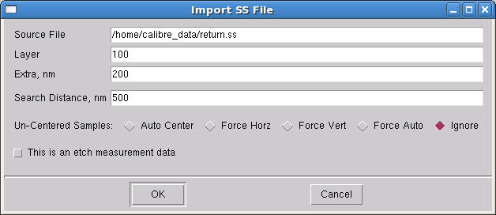
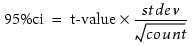

Follow this procedure
to create a gauge file out of a sample spreadsheet file. Gauge files
are modified sample spreadsheets with gauges (measurement location
information) drawn around each structure in the sample spreadsheet.
Prerequisites
One
or more test patterns for calibration purposes
Siemens
EDA recommends that you use a test pattern generated in Calibre
WORKbench as a supplement to your existing test pattern.
The test pattern must be flat.
A
sample spreadsheet with measurements from your process on the test
patterns
Tip If
your sample spreadsheet does not have measurements filled in, it
will not load properly into CM1 Center (the error will be similar
to ‘Bad measurement value, must be a number rather than NA’). The
solution for this error is to either fill in the appropriate values
from your process, or copy values from the Drawn column to the Measurement column
using VT5 Center or a spreadsheet editor.
Procedure
- Open CM1 Center (In Calibre
WORKbench, choose the menu item).
- In CM1 Center, choose the menu
item. After navigating to a file, the Import SS to Gauges dialog
box appears (Figure 1).
Figure 1. Import SS to Gauges
Dialog Box
Fill in the dialog box as follows:
Layer — is the layer number
for the test structures.
Extra — is the distance
beyond the CD gauge distance over which the simulation will be performed.
Search Distance — should
be set to the largest feature width. If any sample structure is
larger than the specified Search Distance, an error will be generated
in the shell window indicating that two polygon edges were not found.
Un-Centered Samples —
sets how gauges are placed for un-centered sample sites (relative
to the center of the test structure): auto centered, forced to be
vertical or horizontal, forced to be on an edge (Force Auto), or
to do nothing (Ignore).
Click OK when
you have completed the entries. CM1 Center loads the sample spreadsheet
file into the Gauges tab and converts it
to a gauge file.
Tip If samples
are skipped during the conversion, a dialog box appears to let you
inspect the skipped locations.
- To enable the generation of
measurement statistics information, change the value of the StDev
and Count fields.
StDev — Sets the standard
deviation in nm for characterizing measurement statistics. This
input parameter is used along with count to calculate the 95% confidence
interval (95% CI column). Set this cell to a positive value to use
the gauge; all columns must be set to -1 to deactivate the feature.
Count — Sets the number
of samples used to obtain the stdev value. Must be greater than
1 if known, and less than or equal to 1 otherwise.
After a successful optical,
CM1, or VEB run, the 95% CI column contains the calculated confidence
interval based on the following equation:

where t-value is a two-tailed
Student’s probability of 0.05 with count-1 degrees of freedom, and
stdev and count are the input values supplied above. Similar information
is also written to the log file.
- Save the new gauge file ( menu
item).
Note: If your test structures contain
anti-SRAFs, it is required that you temporarily fill in the anti-SRAF
trench in the test pattern before converting a VT5 sample data spreadsheet
to a gauge file. Once the gauge file has been created, the fill
can be removed.